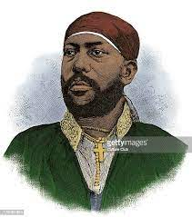

Atse Minilik was a remarkable and influential figure in the history of
Ethiopia. His leadership, wisdom, and dedication to his people have left
a lasting legacy. As the King of Ethiopia, he played a pivotal role in
defending the country's sovereignty and preserving its culture and
traditions.
Unresistable KING
in land of Ethiopia:
-
1855 - Tewodros II, invaded the then semi-independent kingdom of Shewa. Early in the subsequent campaigns, Haile Malakot died, and Sahle Miriam was captured and taken to the emperor’s mountain stronghold, Amba Magdela. Still, Tewodros treated the young prince well, even offering him marriage to his daughter Altash Tewodros, which Menelik accepted.
-
1886 : Foundation of Addis Ababa - Menelik was on campaign in Harar, Empress Taytu Betul camped at a hot spring to the south of Mount Entoto. She decided to build a house there and from 1887 this was her permanent base, which she named Addis Ababa (new flower). Menelik's Generals were all allocated land nearby to build their own houses, and in 1889 work began in a new royal palace.[52] The city grew rapidly, and by 1910 the city had around 70,000 permanent inhabitants, with up to 50,000 more on a temporary basis.
-
1889 : Wuchale Treaty - On 2 May 1889, while claiming the throne against Ras Mengesha Yohannes, the "natural son" of Emperor Yohannes IV, Menelik concluded a treaty with Italy at Wuchale (Uccialli in Italian) in Wollo province. On the signing of the treaty, Menelik said "The territories north of the Merab Milesh (i.e. Eritrea) do not belong to Abyssinia nor are under my rule. I am the Emperor of Abyssinia. The land referred to as Eritrea is not peopled by Abyssinians – they are Adals, Bejaa, and Tigres. Abyssinia will defend his territories but will not fight for foreign lands, which Eritrea is to my knowledge."[57] Under the Treaty, Abyssinia and Kingdom of Italy agreed to define the boundary between Eritrea and Ethiopia. For example, both Ethiopia and Italy agreed that Arafali, Halai, Segeneiti and Asmara are villages within the Italian border. Also, the Italians agreed not to harass Ethiopian traders and to allow safe passage for Ethiopian goods, particularly military weapons.[58] The treaty also guaranteed that the Ethiopian government would have ownership of the Monastery of Debre Bizen but not use it for military purposes.
Atse Minilik's commitment to modernization and development helped
Ethiopia progress in many areas. He promoted education, infrastructure,
and diplomacy, making him a beloved figure among Ethiopians and admired
by people worldwide.